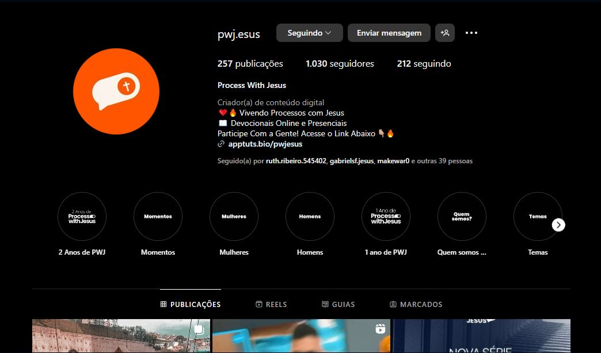

Bem vindo(a) Ao PWJ
Postado em 01/01/2024Process With Jesus, chamado de PWJ é o Projeto que nasceu em 2020 e tem o objetivo de ajudar pessoas que estão passando por processos e não querem passar sozinhos. Venha Fazer Parte do PWJ
Onde Nós podemos ser encontrados?
Postado em 01/01/2024 Talvez você nos conheceu pelo site e não sabe onde pode nos encontrar, por isso, na parte superior do site, existe um botão que te leva para o nosso instagram. Lá você consegue ter informações de quando tem devocional online e presencial, assisti cortes de devocionais e fica sabendo de mais novidades que só falamos por lá!!